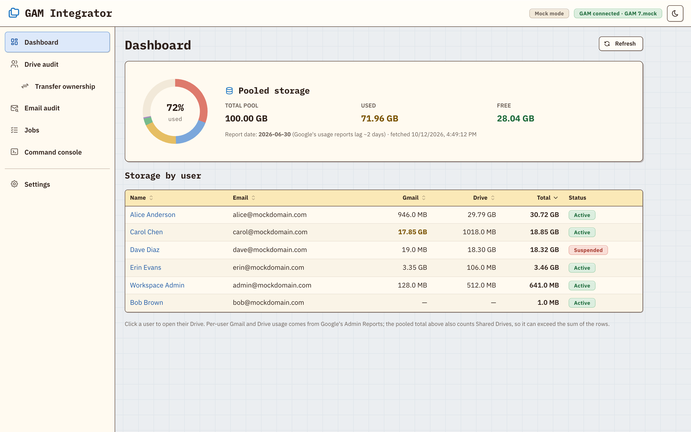
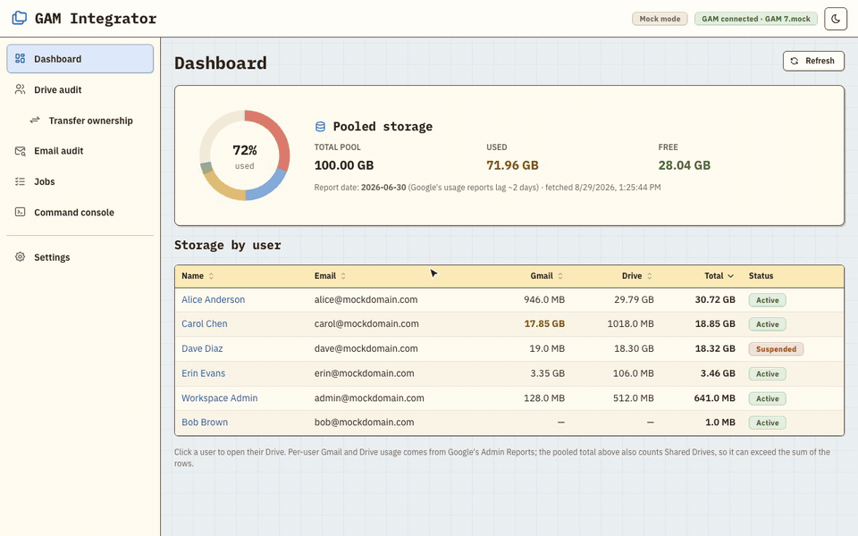
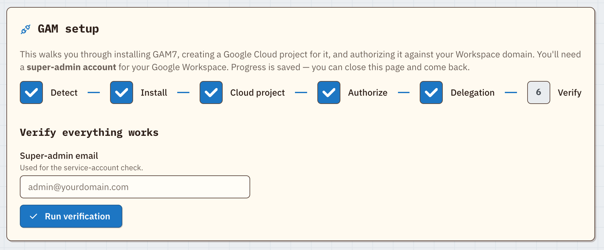
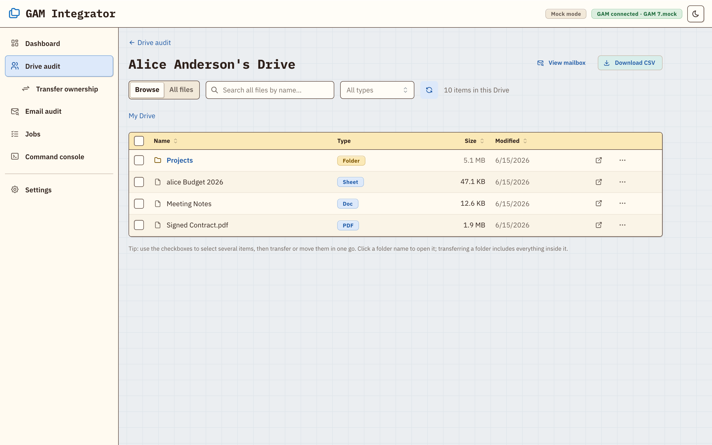

Set up GAM without the docs
A guided wizard installs GAM7, or finds your existing GAM7 or GAMADV-XTD3, and walks you through the Google Cloud project, OAuth, and domain-wide delegation in plain English, with a live terminal in the browser.
Manage Google Drive and Gmail across your whole Google Workspace (formerly G Suite) domain, without learning GAM's command syntax. GAM Integrator installs and sets up GAM for you, then turns everyday admin jobs into point-and-click screens.

The storage dashboard, shown with a sample domain in the Pastel Retro skin.
The main feature
In Google Drive, giving a folder a new owner doesn't change who owns the files inside it. Anything a colleague added stays theirs, so a departing employee's "transferred" folder is often still full of other people's files.
GAM Integrator walks the entire folder tree and transfers every file and subfolder to the new owner, whoever owns it now. A deep scan also finds files that were never shared with you.

Features
Built for Google Workspace super admins and IT teams who want GAM's reach without memorizing its syntax: offboarding a departing employee's Drive, auditing storage and sharing across every user, and exporting a user's mailbox.
A guided wizard installs GAM7, or finds your existing GAM7 or GAMADV-XTD3, and walks you through the Google Cloud project, OAuth, and domain-wide delegation in plain English, with a live terminal in the browser.
See storage per user, open any user's Drive, browse folders, search, filter by file type, and export the results to CSV.
See who each file is shared with, and add, change, or remove access. Copy or move files within a user's Drive.
Browse and search any user's mailbox, search mail across the domain, see a Gmail storage report, and export a whole mailbox to a lossless JSONL archive or CSV, with attachments if you want them.
The built-in console runs one gam command at a time and asks you to confirm destructive ones
(delete, wipe, trash, …).
Light, dark, or follow your OS, with an accent color and three skins: Modern, Classic (Mac OS Platinum), and Pastel Retro.


Install
You don't need to install GAM first. On first launch the app opens the setup wizard, which installs GAM7 or finds the copy you already have.
# clone, build, and start
git clone https://github.com/christian-g-guerrero/gam-integrator.git
cd gam-integrator
npm install
npm run build
npm start
# then open http://127.0.0.1:5199
# or try it on a fake domain first, no Workspace needed
npm run dev:mock
On macOS you can double-click start.command instead: it installs, builds, starts the app,
and opens your browser.
Security
With GAM set up, the app can act on your whole domain, so it is built to stay local.
The server listens on 127.0.0.1 and rejects cross-origin and DNS-rebinding requests from
other websites.
GAM runs as a direct program call with fixed arguments, never through a shell. The console accepts only
a single gam command.
GAM's credentials stay where GAM keeps them. The app's own cache and exports live in
~/.gam-integrator/, and you can review and delete them in Settings.
FAQ
Yes, this is one. GAM Integrator is a web front end for GAM7 that runs locally. Most tasks are buttons
and forms, and a built-in console still runs any gam command when you need one.
In Drive, changing a folder's owner leaves the files inside owned by whoever created them. Use Transfer in GAM Integrator: pick the folder and the new owner, check the dry-run preview, and every file and subfolder moves to the new owner.
GAM7 is the current release of GAM and includes what was GAMADV-XTD3. The setup wizard installs GAM7,
and it also finds an existing install in ~/bin/gamadv-xtd3.
Only through GAM's own calls to Google's APIs. The app runs on 127.0.0.1, has no cloud
service of its own, and keeps its cache and exports in ~/.gam-integrator/.
Yes. npm run dev:mock runs it against a fake domain with sample users, files, and mail.
Every feature works, and nothing talks to Google.